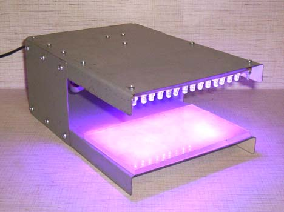
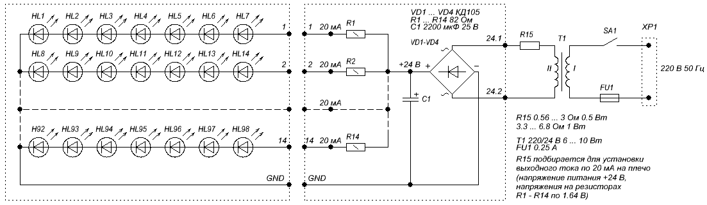
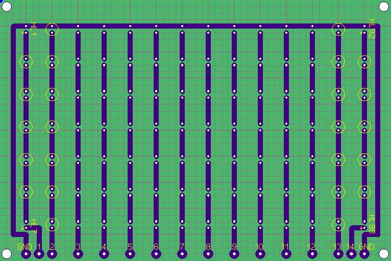
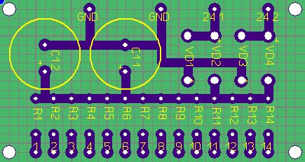
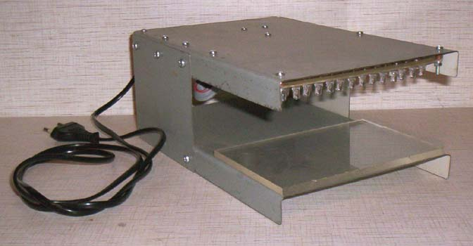
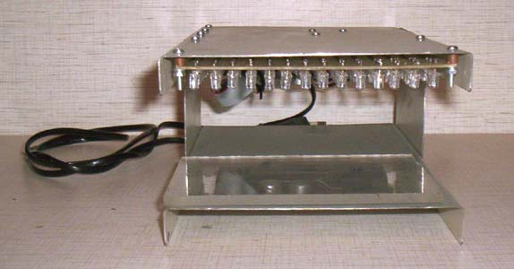
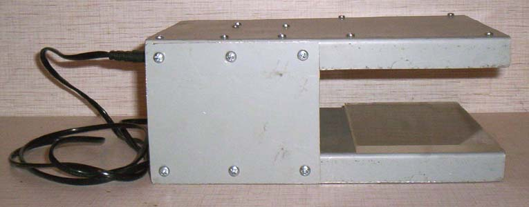
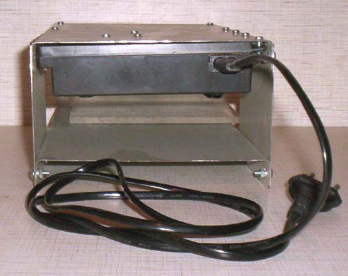

Ультрафиолетовый светодиодный светильник для засветки фоторезиста при изготовлении печатных плат

1. Введение
Практически в любом электронном устройстве используется одна или несколько печатных плат, на которые производится монтаж радиодеталей. Печатные платы можно делать разными способами [1], в частности, с использованием фоторезистивной маски при химическом травлении. Вначале фоторезист в виде лака или пленки наносится на заготовку печатной платы, а затем засвечивается через трафарет. В качестве источника света обычно используются ультрафиолетовые источники света с длиной волны порядка 400 нм. Достаточно простые и дешевые светильники могут быть изготовлены на основе матриц легкодоступных недорогих светодиодов, излучающих в ультрафиолетовом диапазоне (длина волны 395 ... 400 нм).
2. Конструкция
Ультрафиолетовый светодиодный светильник собран по схеме, представленной на рис. 2.1. Устройство состоит из двух узлов. Первый узел - собственно источник света на светодиодах HL1 - HL98, соединенных параллельно-последовательно (14 параллельно соединенных групп по 7 последовательно включенных светодиодов в каждой). Второй узел - источник тока, состоящий из выпрямителя VD1 - VD4, фильтрующего конденсатора C1 и токоограничивающих резисторов R1 - R14. Источник тока запитывается от сети переменного тока через силовой трансформатор T1 с выходным напряжением примерно 24 В через токоограничивающий резистор R15. Вместо силового трансформатора с выпрямителем может использоваться готовый импульсный источник с постоянным выходным напряжением 24 В, подключаемый непосредственно к резисторам R1 - R14 (в точке +24 В). Предпочтительный ток питания светодиода составляет 20 мА и задается резисторами R1 - R14.

Рис. 2.1. Схема электрическая принципиальная ультрафиолетового светодиодного светильника для засветки фоторезиста.
Эскизы печатных плат узлов ультрафиолетового светодиодного светильника показаны на рис. 2.2 и 2.3. Светодиоды смонтированы на печатной плате в виде матрицы 7 х 14, которая может освещать площадь примерно 100 х 150 мм2.

Рис. 2.2. Эскиз печатной платы ультрафиолетового светодиодного светильника для засветки фоторезиста. Односторонний фольгированный стеклотекстолит толщиной 1.0 ... 1.5 мм. Размер платы 150 х 100 мм2. Печатные проводники расположены снизу.

Рис. 2.3. Эскиз печатной платы источника тока для ультрафиолетового светодиодного светильника. Односторонний фольгированный стеклотекстолит толщиной 1.0 ... 1.5 мм. Размер платы 85 х 45 мм2. Печатные проводники расположены снизу.
Устройство изготовлено в виде основания и верхней крышки, соединенных двумя боковыми панелями. К верхней крышке изнутри крепится печатная плата со светодиодами, печатная плата источника и источник питания. Внешний вид ультрафиолетового светодиодного светильника в разных ракурсах показан на рис. 2.4 - 2.7.

Рис. 2.4. Внешний вид ультрафиолетового светодиодного светильника для засветки фоторезиста.

Рис. 2.5. Внешний вид ультрафиолетового светодиодного светильника для засветки фоторезиста (вид спереди).

Рис. 2.6. Внешний вид ультрафиолетового светодиодного светильника для засветки фоторезиста (вид сбоку).

Рис. 2.7. Внешний вид ультрафиолетового светодиодного светильника для засветки фоторезиста (вид сзади).
3. Характеристики и способ применения
Площадь засветки, определяемая максимальный размер
засвечиваемой платы, составляет 100 х 150 мм2.
Длина волны излучаемого света 395 ... 400 нм.
Габариты светильника не более 250 х 165 х 110 мм3 (без учета сетевого
кабеля).
Масса светильника не более 1.2 кг.
При работе подготовленная печатная плата с нанесенным фоторезистом кладется на основание светильника под светодиодную матрицу засвечиваемой стороной кверху. Сверху на плату помещается трафарет распечатанной стороной к слою фоторезиста и плотно прижимается оргстеклом толщиной до 4 мм. Светильник включается в сеть 220 В 50 Гц на время, задаваемое производителем фоторезиста или определяемое экспериментально (обычно 1 ... 5 минут). После этого светильник выключается. Далее аналогично производится засветка второй стороны печатной платы (при необходимости, если плату двухсторонняя).
Ссылки:
02.11.2023
Альтернативные источники
энергии
Компьютеры и
Интернет
Магнитные поля
Механотронные системы
Перспективные
разработки
Электроника и технология